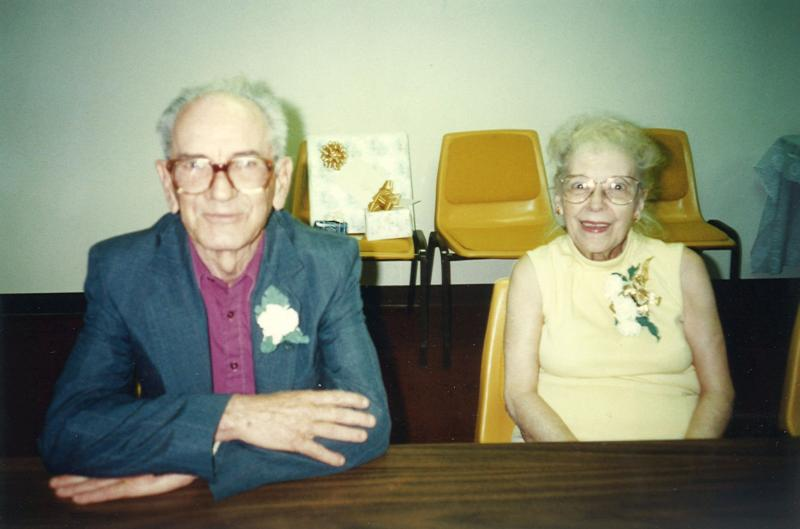
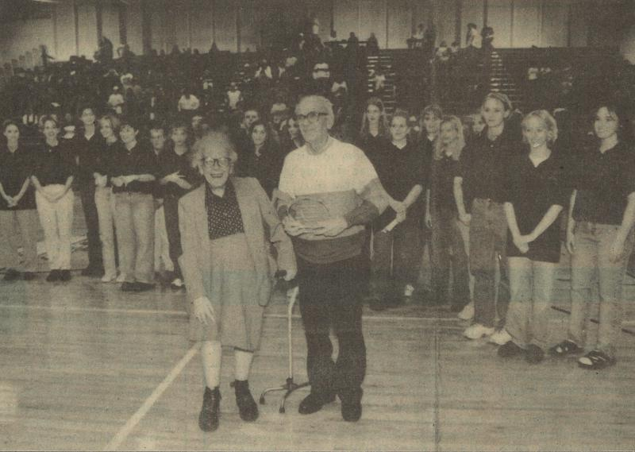

Martin Manley: My Life and Death
Born 8-15-53, Died 8-15-13 , Age 60
- Home Page
- January 1, 2012
- June 11, 2012
- Suicide Preface
- Why Suicide?
- Why not?
- Why Age 60?
- Self-Serving?
- Suicide - How 2
- Gun Control
- Other Suicides
- Other Quotes
- ------------------------------------
- Growing Up
- OMG: I look 60!
- Mom and Dad
- The Heavens
- My Religion
- Chancel Choir
- Victory O Lord
- The Proposal
- Two Marriages
- First Two Loves
- Pictures
- Trips and Travel
- Writing Fiction
- Music & Poetry
- Movies & TV
- Health
- Sleep Deprived
- Living Donor
- Food & Drink
- Creations
- Sports
- KC Star
- KC Tornado
- My IQ
- Synesthesia
- Poker
- Legal
- JOCO, Ks.
- U.S. Financial
- 911 & Conspiracies
- COOL STUFF
- Births & Deaths
Mom and Dad
I discuss some issues related to my parents in the category “Growing Up” to the left side, but this will be more comprehensive and will include a few pictures. More pictures can be found under the category called... wait for it... "Pictures".
Francis Collins Manley (B: 11-23-23, D: 1-16-07, Age 83).
I take after my dad more than my mom. That’s probably normal for a son, but you never know. My dad was never sick, my mom often was. I discussed in the category “Health” the fact that I barely know what being sick even means. I remember him having months of sick time built up that he never took. He worked for the Barton County Welfare Department in Great Bend, Kansas. When he left there, I believe he was paid for all those unused sick days.
He then went to work where my mom worked – Larned State Hospital. That was after the kids had all left home. My parents moved from about 15 miles from Larned into town.
My dad was also somewhat introspective. He read a lot. He told me once his IQ was 138. So, he was pretty smart. I suspect if computers had been around in his day, he would have gravitated to them just as I did.
The one major difference between us is that he loved to read. He read constantly and he could read extremely fast. He used to point out that he could read a major novel in a couple hours. It would take me a couple weeks if I did nothing else! That’s why I never did it - duh! As a speed reader, he was constantly checking books out of the library and even worked at the Topeka Public Library before we moved to western Kansas. In his final years in Larned, Kansas, he actually taught a speed reading class at the Larned Public Library.
I’m not ashamed to admit that the only book I read through high school was Shag: The Last of the Plains Buffalo - a book for second graders. In fact, I was always kind of proud of it because I could say I bluffed my way through high school simply by reading the book jackets and asking my dad what it was about.
That subjective aspect of reading and, thus comprehending, is something that always turned me off. As a rule in life, the more subjective something was, the less I wanted to have anything to do with it. The more objective and verifiable, the more I was drawn to it.
Reading is such a bore unless it contains a lot of statistical data. I realize most people would say exactly the opposite, but I’m not most people, another duh. And, although I was a lot like my dad in many respects, I wasn’t in the same hemisphere with respect to reading.
My dad was adopted and an only child. He had a birth certificate that he dug up somehow that showed his birth name to be Dallas Herman Ludwig and that his mother was a teacher. He was born in Kansas City. I searched for a long time hoping to uncover his birth family, but to no avail. Apparently, he had a German mother or father or both.
He grew up in Burlington, Kansas. He was dirt poor and had no prospects for employment when he graduated from high school. So, he went into the service. But, considering he graduated in 1941 – the same year Japan bombed Pearl Harbor, it was inevitable that he would be in the service one way or the other. He never advanced beyond Private First Class, but he fought for our country through World War II – spending his entire time in the Pacific theater. And, for that, he deserves respect.
He was in the Army, so although he traveled via ship from place to place, most of his time was on the ground – much of it in battle. He really didn’t like to go into detail, but I remember him telling me about his best friend getting shot in the head – a fellow named “Lance”. I also remember seeing (although I don’t know whatever happened to it) a Japanese flag with a hole in each corner and blood stains around each hole. He told me it was folded into fourths and that he shot the guy. I guess it was common to take things off the dead Japanese soldiers and he had this flag under his shirt. It was a reminder of just how real is war.
After WWII, my dad used the GI Bill to go to college. He eventually graduated from Washburn University in Topeka with a degree in history - something he was incredibly proud of.
Unlike me, my dad didn’t have a lot of idiosyncrasies – or if he did, he wasn’t as obvious about them. My mom and dad didn’t have a lot of other friends. My dad was perfectly content to come home from work to his house out in the middle of nowhere and sit in his easy chair and read, read, read.
Bertha Marie Hartzell (B: 8-28-26, D: 6-20-02, Age 77)
My mom was 15 years younger than the next youngest child in her family. Consequently, she grew up as an only child much like my dad. Her two brothers and two sisters were more like aunts and uncles to her and their kids (her nieces and nephews) were more like her cousins. As a result, we didn’t know the rest of her family all that well even though we grew up in Topeka where her family was. But, when we moved to western Kansas (I was 11 going on 12), most of the contact with her family dried up - especially considering her parents had died either before I was born or very shortly thereafter.
My mom actually worked multiple jobs most of the time, which included a full-time job at Larned State Hospital as some kind of an aide. For many years she also sold Avon products. In fact, I remember her winning awards for most sales in some geographical area. She was relatively outgoing, but other than whoever she knew at LSH or via Avon or church, I’m not sure I remember her (or my dad) having friends – at least not the way I think of friends. I can’t remember ever having another couple or another family over to our house.
Part of the reason might be that she was either working or sleeping and so there wasn’t a lot of time to keep the house up or to entertain. My mom worked nights at LSH while my dad worked days either at Barton County Welfare or LSH. They didn’t see each other much and we didn’t see both of them together much. It was a very dysfunctional family for those days. Nowadays, big deal. What family isn’t dysfunctional in some way?
My mom had stomach problems most of her adult life. It seemed like she was sick relatively often. I don’t remember much of those days, so I can’t put it in context except that compared to my dad who was never sick, it seemed like she was sick a fair amount. Even so, it didn’t keep her from working all the time. And when she slept, it probably wasn’t more than 4-6 hours.
She was also a huge country music fan. I don’t know what caused that. Maybe she had a head injury as a child. Maybe she just liked the shape of a banjo. Who knows? Either way, she was so obsessive about it that we would work any kind of trip we were taking as a family around some concert somewhere. I remember Shreveport, Louisiana for some inexplicable reason. I hated country music so bad that I refused to go into the concert. By this time I was probably 15 years old. So, I stayed in the car the entire time.
My mom became aware of my dad while he was in the war. I’m not sure how. She began writing to him and when he was discharged, they quickly met, dated and eventually got married on June 3, 1946. We celebrated their 50th anniversary in Larned in 1996.

My parents at their 50th wedding anniversary party in Larned.
The one thing I remember about my parents’ later life was a love affair with girls’ high school basketball in Larned… which was kind of strange. Here is this couple that didn’t raise kids in Larned, didn't raise kids to play basketball and now were huge supporters of girls’ basketball. Why not boys? Why not football?
My mom and dad were so passionate that they would actually travel to see the girls play. When your average opponent is 50 miles away and the sport is played during the winter, that’s a big deal for an elderly couple. Their commitment to the program did not go unnoticed. On Friday, January 8th, 1999 they were honored during a home high school basketball game for their loyalty.
In the following Wednesday Larned Tiller and Toiler newspaper, there was a large picture of them receiving the plaque along with a very nice write-up.
-------------------------
Larned High School Stuco present Manley’s
with school activities plaque
There are sports fans, and then there are Mr. and Mrs. Francis Manley.
Mr. and Mrs. Manley, no matter what the weather, have been loyal and faithful Larned High School sports boosters. Because of their loyal following, they were recipients of a special award during halftime of the Larned-Hoisington boy’s basketball game Friday evening at the middle school gymnasium.
“The Kansas State High School Activities Association made available an award to present to people in a community that exhibit loyal fan support and good sportsmanship,” explained Larned High School Student Council Advisor Janet Fleske.
The Larned High School Student Body, on behalf of the entire Larned High student body, then presented the Manley’s with a beautiful plaque.
“This evening the student body is proud to honor Mr. and Mrs. Francis Manley for their faithful support of school activities,” said Larned High Student Council President Stacy Zook. “It doesn’t matter what the weather is outside or how far it is to travel, we can always count on them to be at all of our games.”
“So, it is a great honor now for me to be able to present you with this plaque which reads: ‘In Appreciation for your loyal dedication to Larned High School Athletics.’ Thank you again for all of the support that you have shown us all of these years.”

--------------------------------
The Tiller and Toiler is the local newspaper and I used to call it the Tillet and Toilet, so when they were pictured in the paper, I just couldn’t resist telling them that they finally got their mugs in the toilet. Bada Boom! I’ll be here all week.
My mom has been deceased for over 11 years, my dad for over six. No parent should ever see a child die!!! It’s just wrong on every level. If my parents were still alive – irrespective of how close we were as a family, I would never consider suicide. But, they won’t know the difference.
We had each of them cremated. When my dad died, we were able to bury the ashes of both my mom and dad at the Leavenworth National Cemetery along with military honors. I kept a small amount of ashes from each and put them in heart-shaped jars. I filled them with blue stones for my dad and pink stones for my mom. I thought that was probably unique - and in some ways it certainly was. But, when I was prepaying for my own cremation, I saw some very small urns on a shelf and asked the person what they were for. He said sometimes people save a small amount of the ashes and keep them in small urns. I felt a lot better about doing it myself after that.
GPS Coordinates: 39.27728 -94.87733
Copyright 2013 Martin Manley Life and Death. All rights reserved.